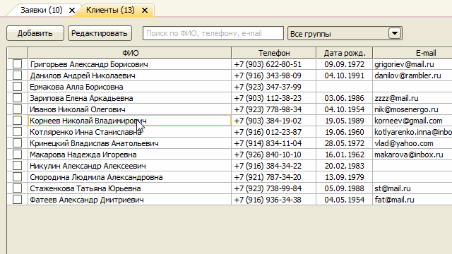
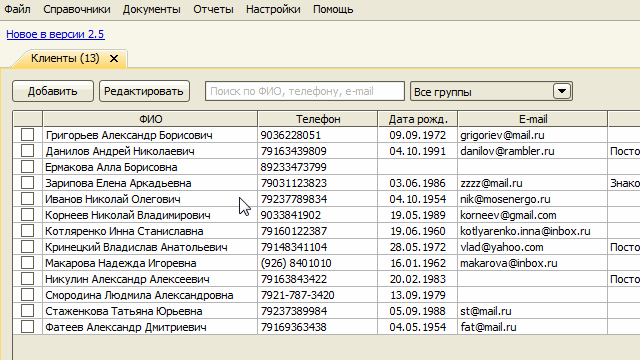
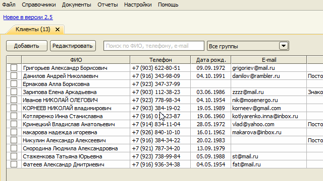
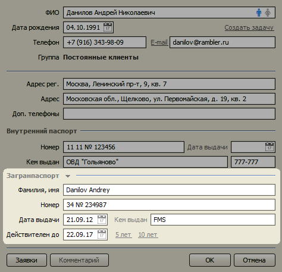
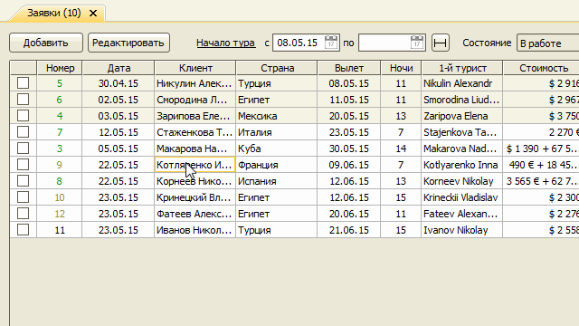
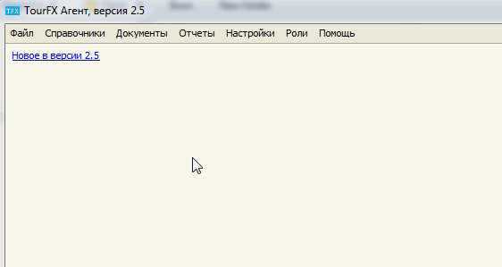

Измения в версии 2.5
- Новый справочник клиентов
- Новая карточка клиента
- Копирование информации о клиенте в список туристов
- Резервное копирование базы данных
- Фильтр по юрлицам в отчете по выручке
Новый справочник клиентов
В новом справочнике клиентов появилась возможность найти клиентов не только по ФИО, но и по номеру телефона и e-mail.
Результаты поиска сразу отображаются в таблице. Если нашелся ровно один клиенто, можно сразу открыть его карточку
с помощью клавиши Enter. Если результат поиска состоит из нескольких вариантов, можно перейти в таблицу клавишей ↓.

Можно отформатировать номер телефона сразу у нескольких клиентов с помощью соответствующего пункта в контекстном меню, вызываемом правой кнопкой мыши. Формат номера задается в настройках Администратором.

В том же меню доступна еще одна функция - "Форматировании ФИО".

Новая карточка клиента
В карточке клиента теперь можно указать данные загранпаспорта.

Копирование информации о клиенте в список туристов
При создании новой заявки данные загранпаспорта клиента можно одной кнопкой добавить в список туристов.

Резерное копирование базы данных
В многопользовательской версии программы появилась возможность одной кнопкой создать резервную копию базы данных и
сохранить ее в определенную папку. Данная функция работает только на компьютере, на котором установлен
Microsoft SQL Server, и только для пользователей, имеющих роль Администратор или Директор.

Если указана папка для резервных копий, программа автоматически создает резервную копию базы данных через 10 минут
после запуска и затем каждую ночь (если программа остается запущенной).
Рекомендуется в качестве папки для резервных копий использовать папку синхронизации
Dropbox, Google Drive
или Яндекс.Диск. Таким образом вы сможете защитить данные от потери в случаях
системных сбоев, действий вирусов или поломки компьютера.
Фильтр по юрлицам в отчете по выручке
Отчет по выручке теперь можно сформировать отдельно на каждое юрлицо или по всем юрлицам вместе.
Остались вопросы? Напишите нам на e-mail